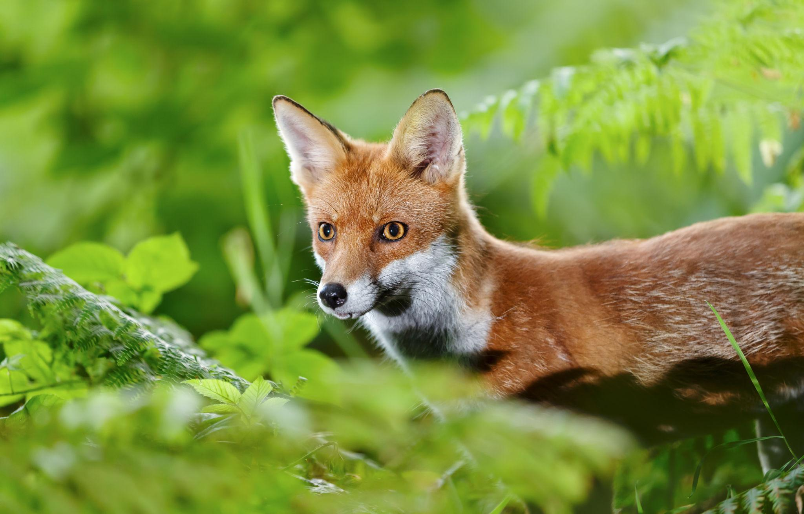
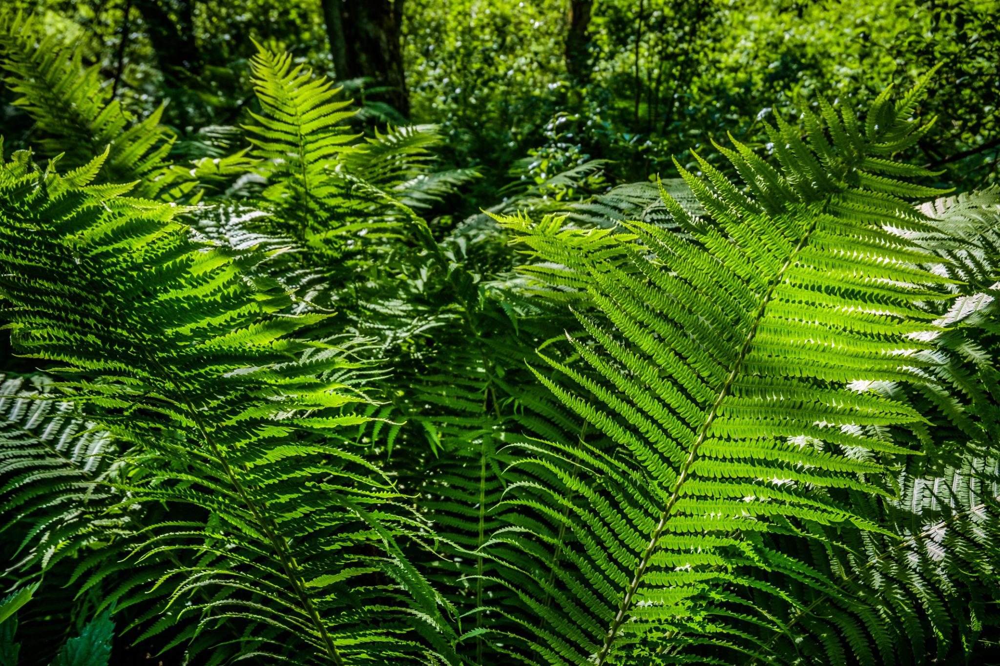

Fauna
Conoce animales fascinantes, sus hábitats y sus curiosidades.
Descubre el mundo animal
¿Qué te gustaría descubrir?

Conoce animales fascinantes, sus hábitats y sus curiosidades.
Descubre el mundo animal
Explora plantas sorprendentes y descubre su importancia en la naturaleza.
Descubre el mundo vegetal